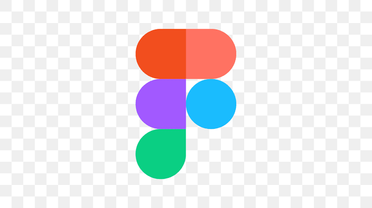

Pomodoro Anime
Portfólio desenvolvido no Figma com foco em produtividade para fãs de animes. O projeto reúne cronômetro pomodoro, recomendação de anime e uma interface moderna inspirada em plataforma de streaming.
Eu sou um estudante de segurança da informação e apaixonado por tecnologia. Estou em constante aprendizado, desenvolvendo projetos para aprimorar minhas habilidades em desenvolvimento web, programação e design de interface.
Meu objetivo é conquistar oportunidades na área de tecnologia, contribuindo com dedicação, organização e vontade de aprender.
Ver projetos Baixar CV
Disciplina
Gera
Resultados
Tenho 22 anos, moro em São Paulo - SP e sou estudante de Segurança da informação. Desde o meu primeiro contato com tecnologia, descobri um grande interesse por esse mundo e hoje busco evoluir cada vez mais, aprendendo e construindo projetos que me aproximam dos meus objetivos.

★★★★☆
Portfólio desenvolvido no Figma com foco em produtividade para fãs de animes. O projeto reúne cronômetro pomodoro, recomendação de anime e uma interface moderna inspirada em plataforma de streaming.

Protótipo de um site para uma casa de show com design moderno, página inicial, agenda de eventos e área para compra de ingressos.
Vamos conversar! Me chame por algum dos canais abaixo
Sempre
em
evolução